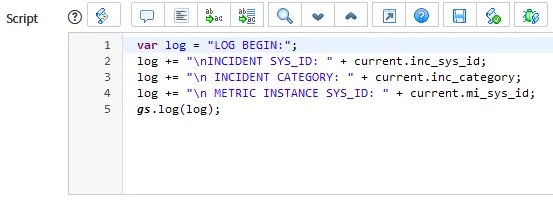
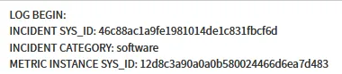
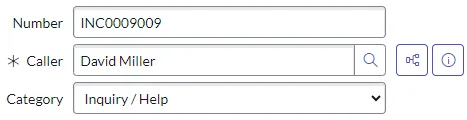

Welcome to my blog!
This is where I'll post about cool ServiceNow stuff and other things I'm working on.
List Choice UI Action on Database View
13 February 2021
We had a very specific use case that involved Assessment Instances, Assessment Instance Questions, and Assessment Feedback Tickets (custom created). If an Assessment with written feedback was analyzed and found to have something worth correcting, a Feedback Ticket should be opened up to the team who resolved that user’s original ticket for root cause analysis and remediation.
In order to facilitate that process, we needed:
-
A way for the survey analysis team to view Assessments along with the recorded Additional Information in the Assessment Question that contained it, filtered so they did not see any that already had a Feedback Ticket associated with it. This would be a database view that joined those three tables.
-
A way for the survey analysis team, once an Assessment worth RCA’ing was found, to easily create a Feedback Ticket.
Given the team would already be working within a filtered Database View, it made sense to give them a UI Action directly within that view. So, I created a List Choice UI Action which would allow them to checkmark the items needing analysis and create Feedback Tickets out of it.
What I found was that, within the server script for this UI Action, you could use the various joined fields together in the same format you use them to join your tables together: current.asmt_sys_id, current.asmtq_sys_id, etc. I was able to send the needed record sys_ids to a Script Include for processing and generating a Survey Feedback ticket.
While I didn’t have a need to send the exact field data over to the Script Include (because I was also calling that function from some other locations, and thus querying the needed data anyway), I can confirm that you can grab not only sys_ids but also field data. Take this example UI Action on the incident_metric OOB Database View:

This Script for the server UI Action will log details from multiple tables.

The resulting log entry shows the result.
In Summary
This can be a pretty nice way to make Database Views more actionable, if you have the need for it.
Portal UI Actions, Part 1
16 February 2021
Before there was a “Standard Ticket Actions”, we had a need to create a UI Actions widget on the portal. Here’s what I did to achieve that.
HTML
The entire panel shows if data.panelVisibility is true. Check the below server script to understand how that evaluates.
Then, for each button in c.data.buttons, show if button.condition is true. Again, check the server script — the condition for each button is stored in the server script.
On click of the button, the modal window opens. A comments window optionally displays and is optionally mandatory depending on data.commentsVisible and data.commentsMandatory which, again, is fed in from the buttons data...
Finally, there is a Submit and a Cancel button in the modal window.
<!-- This section handles the panel and button display.
You will not need to edit it because it pulls from c.data.buttons --><div class="panel b ng-scope" ng-if="data.panelVisibility">
<div class="panel-heading bg-primary panel-la-jolla-default">
Actions
</div>
<div class="panel-body">
<span ng-repeat="button in c.data.buttons">
<button type="button" ng-if="button.condition" style="margin: 5px 0px;" class="btn btn-default btn-block" ng-click="c.openModal(button.name)">{{button.label}}</button>
</span>
</div>
</div><!-- This section handles the modal window.--><script type="text/ng-template" id="modalTemplate">
<div class="panel panel-default">
<div class="panel-heading">
<h4 class="panel-title">{{data.title}}</h4>
</div><div class="panel-body wrapper-xl">
<p style="margin-bottom: 20px;">{{data.text}}</p>
<form name="modalTemplate" ng-submit="c.uiAction(c.data.button)">
<div class="form-group">
<textarea required sp-autosize="true" ng-if="data.commentsVisible" ng-required="data.commentsMandatory" ng-model="data.comments" id="comments" placeholder="Enter comments here" class="form-control ng-pristine ng-valid ng-scope ng-empty ng-touched" aria-invalid="false" style="overflow: hidden; word-wrap: break-word; resize: horizontal;"></textarea>
</div><input class="btn btn-primary" type="submit" value="Submit" />
<button class="btn" type="cancel" ng-click="c.closeModal()">Cancel</button></form>
</div>
</div>
</script>
Server Script
The Server Script presets some modal form values for data.commentsVisible and data.commentsMandatory to use later—in some cases, we want users to be able to input comments, and in some cases enforce comments to be inputted, before allowing the action to continue.
We also initialize buttonValues.
We then fetch data.table and data.sys_id as the input.table and input.sys_id.
So this looks like:
// Preset some modal form values related to the comments visibility.
// In some cases, we may not need a UI Action to have a comments box.
// Also preset a variable for later.
data.commentsVisible = false;
data.commentsMandatory = false;
var buttonValues;// Get table & sys_id and perform validity checks.
data.table = input.table || $sp.getParameter("table");
data.sys_id = input.sys_id || $sp.getParameter("sys_id");
gr = new GlideRecord(data.table);
if (!gr.isValid())
return;
if (!gr.get(data.sys_id))
return;
Next, we set up some buttons into data.buttons. (These were created in a specific way that they could be offloaded to a separate table if we ended up with too many, but thankfully we never needed that many buttons.)
Here is just one example, but you can put in many buttons to data.buttons. We have four right now.
// Set up each button's basic parameters.
// name: give it a single word name.
// label: This will be the button label and modal header.
// condition: The condition for the button to show up.
// text: The supporting text on the modal window.
// commentsVisible: Whether there should be an input comments window.
// commentsMandatory: Whether the comments window should be mandatory.
// execution: The function to execute when clicked on.// Remember! gr is the variable for the current record.
data.buttons = [{name:'reopenRslv',
label: 'Reopen Resolved Incident',
condition: (data.table == 'incident' && gr.incident_state == 6 && gr.caller_id == gs.getUserID()),
text: "Please enter a comment when reopening an Incident.",
commentsVisible: true,
commentsMandatory: true,
execution: function(){
gr.state = 60;
gr.close_code = '';
gr.close_notes = '';
gr.comments = input.comments;
gr.update();
}
}
]
Notice how we gave the name of the button, the user-friendly label, the text to show the user, the condition to show this button on (which must include the ticket table to show this button on), set our commentsVisible and commentsMandatory, and set our execution script.
You can also set data.referURL within the execution function, by the way. This will be handled later, and is useful for actions that generate new tickets from the existing ticket — you can forward your user directly to the new ticket.
We then decide whether to show the Portal UI Actions panel at all:
// This section sets the entire visibility of the UI Actions panel,
// based on whether any of the button conditions evaluate to true.var arrayLength = data.buttons.length;
var flag = false;
for (var i=0; i < arrayLength; i++) {
if (data.buttons[i].condition == true) {
flag = true;
}
}
data.panelVisibility = flag;
We now handle how the modal window will look and act, by checking if input.button occurred.
// Handle the modal title and additional fields.
// Also handle whether comments need to be visible and mandatory.
// This works by finding the data.buttons object corresponding to the button clicked.if (input && input.button) {
var button = input.button;buttonValues = findButton(data.buttons, 'name', button);
data.title = buttonValues.label;
data.text = buttonValues.text;
data.commentsVisible = buttonValues.commentsVisible;
data.commentsMandatory = buttonValues.commentsMandatory;
}
findButton looks like the below — we are sending along the data.buttons array, ‘name’, and the actual name of the button they clicked on. Essentially we look for which button the user clicked on and return that one, which will display the modal window for the user.
// Function to find the correct button in the buttons data
function findButton(array, key, value) {
for (var i = 0; i < array.length; i++) {
if (array[i][key] === value) {
return array[i];
}
}
return null;
}
Finally, when the user clicks Submit on the modal window, we find the correct execution action and execute it:
if (input && input.action) {
var action = input.action;
buttonValues = findButton(data.buttons, 'name', action);
buttonValues.execution();
}
Client Controller
Our function takes $uibModal, $scope, spUtil, $window.
We first set our $scope.$on:
$scope.$on('record.updated', function(name, data) {
c.data.comments = '';
spUtil.update($scope);
})
Now, we will handle what happens when the modal window opens:
// This function handles opening the modal window.
// If takes the button input and puts it in data object, then reloads the server-side actions.
// After server actions, it opens the modal window.
c.openModal = function(button) {
c.data.button = button;
c.server.update();
c.modalInstance = $uibModal.open({
templateUrl: 'modalTemplate',
scope: $scope
});
}
Remember how, on the HTML, clicking the button executed ng-click="c.openModal(button.name)"? We take that button name, and we pass it to the server as c.data.button = button — this is how our if (input && input.button) works on the server script.
On that server script, we set all the stuff needed for our modal window — the label, the text, the commentsVisible, and the commentsMandatory.
Next, what happens when the user clicks Submit? ng-submit="c.uiAction(c.data.button)" occurs, and lets us know, again, which button we’re submitting.
// This function handles execution of action per the modal submission.
// It takes the action input and puts it in data object, then reloads the server-side actions.
// After server actions, if there's a referring URL to go to then it goes there.
// If we didn't redirect anywhere, it sets action & button back to undefined and then closes the modal window.
c.uiAction = function(action) {
c.data.action = action;
c.server.update().then(function() {
if (!!c.data.referURL)
top.window.location.href = c.data.referURL;
c.data.action = undefined;
c.data.button = undefined;
})
c.modalInstance.close();}
We take action on the button by sending c.data.action back to the server — this is what triggers the if (input && input.action). If we provided a referURL, we’d then send the user there — otherwise, we just refresh the page and reset our action and button.
Finally, if the user clicks Cancel, we trigger ng-click="c.closeModal()".
// This function closes the modal window.
// It first clears out button and action, just in case.
c.closeModal = function() {
c.data.action = undefined;
c.data.button = undefined;
c.modalInstance.close();
}
This clears out our action and our button so they can click a different one if they want to instead.
In Summary
This was my first attempt at creating a Portal widget. There are certainly places where it can be improved and refined, but it does what it needs to do.
Portal UI Actions, Part 2
3 October 2022
If you read the last Portal UI Actions post, I originally hard coded in the data to the server side JavaScript. Let’s extend this with a table, so that we can easily configure in new Portal UI Actions.
Creating a Table
Let’s start by setting up a table. If you remember, the parameters we wanted to provide for each action were:
// Set up each button's basic parameters.
// name: give it a single word name.
// label: This will be the button label and modal header.
// condition: The condition for the button to show up.
// text: The supporting text on the modal window.
// commentsVisible: Whether there should be an input comments window.
// commentsMandatory: Whether the comments window should be mandatory.
// execution: The function to execute when clicked on.
This should be relatively simple to port over to a table. I’ll go over the Execution script later.

This is a visual reference for the form I set up for Portal UI Actions.
Some important things to note:
-
We have a Table Name field, called "u_ticket_table". We need this so that the Conditions field ("u_conditions") can refer to it.
-
We have a nice Script field called "u_execution_script" which will, sensibly, hold our execution script.

It’s now just a simple matter of ingesting these records via the server script.
Revisiting the Server Script
So at the top, where we have our preset values, let’s pre-set a new value called data.buttons to hold our buttons.
// Preset some modal form values related to the comments visibility.
// In some cases, we may not need a UI Action to have a comments box.
// Also preset data.buttons to hold buttons,
// and buttonValues to handle server-side actions later.
data.commentsVisible = false;
data.commentsMandatory = false;
data.buttons = [];
var buttonValues;
Now, the big one. Instead of our hardcoded data.buttons we set before, let’s query our new Portal UI Actions table! (I called it "u_portal_actions", for reference.)
// Query for portal buttons corresponding to this table
// For each found, evaluate the condition
// If it passes, add to the data.buttonsvar actionQuery = new GlideRecord(‘u_portal_actions’);
actionQuery.addQuery(‘u_ticket_table’,data.table);
actionQuery.query();while (actionQuery.next()) {
if (GlideFilter.checkRecord(gr, actionQuery.u_conditions.getValue())) {
var actionButton = {
name: actionQuery.u_name.getValue(),
label: actionQuery.u_label.getValue(),
condition: actionQuery.u_conditions.getValue(),
text: actionQuery.u_modal_text.getValue(),
commentsVisible: (actionQuery.u_comments_box_visible.getValue() == ‘1’),
commentsMandatory: (actionQuery.u_comments_box_mandatory.getValue() == ‘1’),
sysId: actionQuery.sys_id.getValue()
}; data.buttons.push(actionButton);
}
}
So this is pretty simple. We’re querying for everything on the Portal UI Actions table that matches the table our ticket is on. For each, if it passes the GlideFilter.checkRecord check, which tests a record (in our case, ours) against a query (in our case, the 'u_conditions' field), we set our actionButton object and push it into data.buttons. Simple!
Oh, and what’s going on with u_comments_box_visible and u_comments_box_mandatory? Well, true and false checkboxes provide 1s and 0s… as strings, as far as I can tell. So we can’t just ask if the values are true or false; they’ll always be true, even if they’re '0', because '0' is a string and therefore true.
Now that we’ve got our buttons, we can also amend that UI Actions visibility section. Last time, we were checking through the array for the conditions. We’ve already done that, though! Let’s just check the length of the data.buttons array.
// This section sets the entire visibility of the UI Actions panel,
// based on whether there were buttons added to data.buttonsif (data.buttons.length > 0) {
data.panelVisibility = true;
} else {
data.panelVisibility = false;
}
Finally, remember how last time we used that findButton function to find the correct execution data to execute? Well, we could technically do that again, but in this case I’m using GlideScopedEvaluator instead.
// Handle server-side actions after modal submission button.
// This works by finding the button execution script in the Portal UI Action record corresponding to the button clicked.if (input && input.action) {
var action = input.action;
buttonValues = findButton(data.buttons, ‘name’, action);var executeButton = new GlideRecord(‘u_portal_actions’);
executeButton.get(buttonValues.sysId);var evaluator = new GlideScopedEvaluator();
evaluator.putVariable(“current”, gr);
evaluator.putVariable(“comments”, input.comments.toString());
evaluator.evaluateScript(executeButton,’u_execution_script’);}
We’re finding that button again, but this time we’re getting its GlideRecord object once more (as 'executeButton'). We’re then putting that into GlideScopedEvaluator along with two variables: "current", which is our passed in ticket object, and "comments", which are the optional comments someone can use. These will be used in our Execution script, going back to that table we set up.
Adding an Execution Script to a Portal UI Actions Record
Most of the setup is relatively straightforward in other parts of the new table, so I’ll go over the Execution Script.
The big thing is that it’s taking both those variables so that you can use them in your object. Here’s the default text I put for that field.
(function executeAction(current, comments) {
// Put your script here. Remember you will only have comments if the comments box was visible.
})(current, comments);

This makes it similar to a Business Rule, so developers with less understanding of JavaScript would still be able to use it. Here’s a really basic example: adding the comment to the ticket. (This is absolutely unnecessary, as there is already a method for doing this on the ticket page; it’s just a proof of concept.)
Please ignore the comment I have in the script because it’s from an older iteration :) We're not using gr anymore.

And for good measure, here’s all three buttons I’ve set up:

Putting it all together - Portal UI Actions in Use
Let’s look at this in action! I’ve opened up a new Request for an Acer Aspire NX. The Actions widget has shown up, and it’s shown me the two Actions that apply: Comments Test and Cancel Request.

Let’s use the Comments Test first, just for fun. Clicking on it displays the modal window, with our mandatory text. Trying to Submit without filling it out shows a nice “Please fill out this field” message, since it’s mandatory.

Submitting inputs the comment, as expected.

Cancel Request cancels the RITM and its parent REQ. (If you don’t have a Business Rule set up to cancel SCTASKs when a parent RITM is canceled, you might want to also make that part of your execution script.)
This one doesn’t have a comments box because I didn’t set that up in its record, but realistically you would probably want the end user to place a comment indicating the cancellation reason.

Submitting this cancels the RITM, as predicted. The Portal UI Actions widget also disappears, because now there are no buttons which satisfy the criteria of this ticket.

Just for fun, what was that last button I created? The Incident test?
It does nothing. It’s just an example to show how different buttons can appear on different ticket types.

In Summary
While modern Portal design doesn't really necessitate the use of the Portal UI Actions widget anymore, the learnings taken from it can be used in other areas. It was pretty neat to learn how to use Filter Conditions and Execution Scripts in a custom table.
Passing Values to Arrays during GlideRecord Queries
8 February 2024
Some very intelligent people on Stack Overflow will tell you that JavaScript does not actually have any sort of pass by reference. In fact, JavaScript only has “pass by value” and “pass by sharing”, in which what is passed is not the original reference but a copy of the reference.
None of this matters for what we’re about to talk about, but you can find a very good explanation of this here.
We are still going to call this “pass by reference” for now, because “reference” is already a well-understood term in ServiceNow.
References and GetValue
We have a good idea of what a reference field is in a table.
If we stored the Caller name directly on an Incident, in a String field… what would happen if that caller changed their name? Suddenly we’d have some Incidents tied to an old name and some tied to a new name. So instead, we reference another record. The caller name is being pulled from the User table instead. What we are storing in Caller is not actually the user’s name, but a reference to the record on the User table.

This means, if David Miller changed his name, that would be changed in the User table, and all the Incidents would now display the new name instead — both all his previous Incidents and any new Incidents he opened. Pretty neat.
We can think of arrays and objects in JavaScript the same way. When we pass data between objects and arrays, what is passed is a reference to where we can find the data.
Let’s look at GlideRecord as an example!
var gr = new GlideRecord('incident');
gr.addActiveQuery;
gr.setLimit(5);
gr.query();
while (gr.next()) {
gs.print(gr.short_description);
}
This will give us:
*** Script: Unable to connect to email
*** Script: My computer is not detecting the headphone device
*** Script: Reset my password
*** Script: Need Oracle 10GR2 installed
*** Script: Need new Blackberry set up
Makes sense. We are printing every time we are looking at a new record in our GlideRecord query.
What if, instead, we put these in an array?
var array = [];
var gr = new GlideRecord('incident');
gr.addActiveQuery;
gr.setLimit(5);
gr.query();
while (gr.next()) {
array.push(gr.short_description);
}
for (item in array) {
gs.print(array[item]);
}
*** Script: Need new Blackberry set up
*** Script: Need new Blackberry set up
*** Script: Need new Blackberry set up
*** Script: Need new Blackberry set up
*** Script: Need new Blackberry set up
Uh oh! What’s happened here?
Well, every time we pushed to array, we thought we were pushing the string of the short description… but instead, we were pushing that reference to gr!
So, what was actually stored in the array looked something like this (translated for the human brain):
[
gr.short_description,
gr.short_description,
gr.short_description,
gr.short_description,
gr.short_description
]
When we printed out the end result, gr.short_description’s value was the very last Incident we were looking at, with the description of 'Need new Blackberry set up', and so we got that outputted five times. gr in this case is kind of like that reference to the Caller name we talked about above — every time we did gr.next(), the Short description changed.
In order to fix this, we have to explicitly push the value of the data we want, and not just the reference of where to find the data.
ServiceNow has provided us a very helpful method within GlideRecord for this, called getValue(). With this method, the data will be translated to a string, and so when it is stored in the array it will no longer be a reference, but actual string data.
Let’s take a look at how the code will look when using getValue().
var array = [];
var gr = new GlideRecord('incident');
gr.addActiveQuery;
gr.setLimit(5);
gr.query();
while (gr.next()) {
array.push(gr.getValue('short_description')); // use getValue
}
for (item in array) {
gs.print(array[item]);
}
Now, when we run this...
*** Script: Unable to connect to email
*** Script: My computer is not detecting the headphone device
*** Script: Reset my password
*** Script: Need Oracle 10GR2 installed
*** Script: Need new Blackberry set up
Great! We have exactly what we wanted — rather than a reference to gr, which keeps changing, the actual value of the data was stored to the array each time we pushed.
What about GetDisplayValue?
In addition to getValue(), there’s another cool method called getDisplayValue(). Rather than getting the backend value for a field, it will get whatever is being displayed to the user.
For example, getValue() on a choice field will give the value, which may be a number, but getDisplayValue() will give the label.
In Summary
It's good to just get into the habit of using getValue() and getDisplayValue() where possible, just so you avoid running into this issue.
A Solution to the Happy Numbers Problem in Javascript
2 March 2023
A happy number is a number defined as follows:
Starting with any positive integer, replace the number by the sum of its squares of its digits, and repeat the process until the number equals 1.
If the number is a happy number, it will resolve to 1. If it is a sad number, it will loop endlessly.
Let’s get the first 10,000 happy numbers!
// INSTANTIATE OUR SETS
// WE KNOW 1 IS A HAPPY NUMBER BY DEFINITION
let happyNumbers = new Set([1]);
let sadNumbers = new Set();
// GET FIRST 10,000 HAPPY NUMBERS
for (x = 0; happyNumbers.size < 10000; x++) {
getHappyNumber(x);
}
// RESULT OUTPUT
var finalArray = Array.from(happyNumbers).sort( (a, b) => a - b);
console.log("Happy Numbers: " + finalArray.join(', '));
function getHappyNumber(input) {
// HOLDING ARRAY WILL LET US KEEP TRACK OF CALCULATED SUMS OF SQUARED DIGITS
let holdingArray = [];
while (true) {
// IF HAPPY NUMBER ALREADY HAS IT
// NO NEED TO RECALCULATE, PUSH TO SET OF HAPPY NUMBERS
if (happyNumbers.has(input)) {
holdingArray.forEach(x => happyNumbers.add(x));
break;
// IF WE ARE IN A LOOP OR SAD NUMBER ALREADY HAS IT
// NO NEED TO RECALCULATE, PUSH TO SET OF SAD NUMBERS
} else if (sadNumbers.has(input) || holdingArray.includes(input)) {
holdingArray.forEach(x => sadNumbers.add(x));
break;
}
// PUSH THE NUMBER TO THE HOLDING ARRAY
holdingArray.push(input);
// CALCULATE SUM OF SQUARES
// GOTTA TURN THIS NUMBER INTO A STRING
// AND THEN SPLIT IT INTO AN ARRAY
// AND SUM UP EACH SQUARED VALUE WITH REDUCE
input = input.toString().split('').reduce(
(acc, cur) => acc + (cur ** 2), 0
);
}
}
Time to break this bad boy down.
Breaking This Bad Boy Down
Let’s start with the basic part, where we turn one number into a sum of its squared digits. That’s the part at the end!
Here’s a example with an input and an output.
let input = 19;
let output = input.toString().split('').reduce(
(acc, cur) => acc + (cur ** 2), 0
);
console.log("Input: " + input + " Output: " + output);
// Input: 19 Output: 82
What we’re doing is:
- Taking that number input and turning it into a String
- Splitting its digits into an array
- Reducing the array by adding each array element (digit) ** 2 (squared) to our initial value of 0
Of course, that 82 would need to be further reduced into 68, which would be reduced to 100, which would be reduced to 1! This means that we now know, by looking at 19, that 19, 82, 68, and 100 are all happy numbers.
We can now examine the whole getHappyNumber() function.
// INSTANTIATE OUR SETS
// WE KNOW 1 IS A HAPPY NUMBER BY DEFINITION
let happyNumbers = new Set([1]);
let sadNumbers = new Set();
// snipping this part for later :)
function getHappyNumber(input) {
// HOLDING ARRAY WILL LET US KEEP TRACK OF CALCULATED SUMS OF SQUARED DIGITS
let holdingArray = [];
while (true) {
// IF HAPPY NUMBER ALREADY HAS IT
// NO NEED TO RECALCULATE, PUSH TO SET OF HAPPY NUMBERS
if (happyNumbers.has(input)) {
holdingArray.forEach(x => happyNumbers.add(x));
break;
// IF WE ARE IN A LOOP OR SAD NUMBER ALREADY HAS IT
// NO NEED TO RECALCULATE, PUSH TO SET OF SAD NUMBERS
} else if (sadNumbers.has(input) || holdingArray.includes(input)) {
holdingArray.forEach(x => sadNumbers.add(x));
break;
}
// PUSH THE NUMBER TO THE HOLDING ARRAY
holdingArray.push(input);
// CALCULATE SUM OF SQUARES
// GOTTA TURN THIS NUMBER INTO A STRING
// AND THEN SPLIT IT INTO AN ARRAY
// AND SUM UP EACH SQUARED VALUE WITH REDUCE
input = input.toString().split('').reduce(
(acc, cur) => acc + (cur ** 2), 0
);
}
}
You’ll notice the first thing we do, outside the function, is instantiate two Sets — happyNumbers and sadNumbers. This will help us keep track of the numbers we’ve already determined to be happy and sad so we don’t waste time recomputing them.
First, we set our temporary holdingArray. This is where we’re going to store our numbers like 19, 82, 68, and so forth, as we calculate.
Next, we enter the while loop, which loops until we hit a break point.
The first thing we do is check whether our happyNumbers Set already has our input number. For example, if we are looking at the number 82, we have presumably already examined 19 and so we would already know 82 is a happy number. No need to go through the whole calculation again — push what we’ve got straight into the happyNumbers Set.
Similarly, we can next check if our sadNumbers Set already has our input number, for the same reason. We also check whether holdingArray already has that number, because if it does we’re stuck in an endless loop which will never resolve to 1, and that’s a sad number. Push it to the sadNumbers Set and stop looping!
If neither condition is satisfied, then we’ve got a brand new number to examine! Push it to our holdingArray for later, and perform our calculation on it.
So, how do we call this to get our first 10,000 happy numbers? We can use a for loop for that!
// GET FIRST 10,000 HAPPY NUMBERS
for (x = 0; happyNumbers.size < 10000; x++) {
getHappyNumber(x);
}
Rather than waiting until x gets to a certain size, we’re just going to loop until our happyNumbers Set reaches a size of 10,000.
Finally, we can output our result!
// RESULT OUTPUT
var finalArray = Array.from(happyNumbers).sort( (a, b) => a - b);
console.log("Happy Numbers: " + finalArray.join(', '));
We create an array out of our happyNumbers Set, and then sort it numerically (since our numbers will all be out of order by default). We can then log this result to our console.
In Summary
This was a pretty fun exercise and my first real use of Sets.